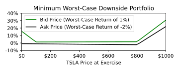

In this post, we illustrate a method to determine if a no-risk arbitrage opportunity exists across an arbitrary collection of derivatives depending on a single underlying asset (e.g. across a whole options chain.) Central to the method is a discretization of the underlying asset price, which allows one to reduce the problem of determining the best worst-case payoff to simply solving a linear program, even though the payoff profiles of the derivative can be arbitrary and highly non-convex.
Derivatives are financial products whose value depend on the price \(x\) of an underlying asset or assets. A key example of a derivative product is an options contract, by which someone pays a fee for the right (but not the obligation) to either buy or sell (depending on the contract) some underlying asset later at a specified price.
Arbitrage opportunities, for the purpose of this post, are situations whereby purchasing a set of assets or products allows one to guarantee (or almost guarantee) a profit on his/her initial investment.
To formulate this search for arbitrage mathematically, we assume we have a collection of \(d\) derivative products, each of which we can invest any non-negative amount. For the \(i\)-th product, if we purchase it now we can exercise the contract at a common time \(T\) for a return \(f_i(x)\) over our initial investment when the underlying asset has price \(x\) at time \(T\). Moreover, let us assume that our underlying asset price \(x\) takes on a fixed number \(x_1,x_2,\ldots,x_n\) of values. Finally, we'll use the symbol \(\boldsymbol{1}\) to indicate the all-ones vector in the context-appropriate dimension.
Given these inputs, our goal will be to see if it is possible to divide an initial investment among these derivatives so that the resulting portfolio is guaranteed a positive return no matter what the underlying asset price \(x\) is at expiry. We will go a bit further, and ask what is the optimal allocation, in the sense that it maximizes the return of the portfolio for the worst case asset price \(x\).
Since the asset takes finitely many values, we can all possible returns of all of the individual derivatives into a common \(n\times d\) matrix \[ \boldsymbol{F} = \begin{bmatrix} f_1(x_1) & f_2(x_1) & \cdots & f_d(x_1)\\ f_1(x_2) & f_2(x_2) & & f_d(x_2)\\ \vdots & & \ddots & \vdots \\ f_1(x_n) & f_2(x_n) & \cdots & f_d(x_n) \end{bmatrix}. \] From here, if we allocate a proportion \(\boldsymbol{\pi} = (\pi_1,\pi_2,\ldots,\pi_d)\) to each of the derivatives in our investment portfolio, the portfolio return is restricted to the values in the vector \(\boldsymbol{r} = \boldsymbol{F}\boldsymbol{\pi}\), with a worst case return of \(\min\{r_i : i=1,2,\ldots,n\}.\)
With this framing, we can see that our original objective of finding the optimal investment among a collection of derivatives can be written as the following optimization problem: \[ \begin{align*} \text{maximize: } & \min\{(\boldsymbol{F}\boldsymbol{\pi})_i : i = 1,2,\ldots,n\}\\ \text{subj. to: } & \pi_i \geq 0,\\ & \boldsymbol{1}^*\boldsymbol{\pi} = 1 \end{align*} \] This problem is convex, since the constraint set is convex, and the objective is concave as the pointwise minimum of concave (in particular, linear) functions of the problem variable \(\boldsymbol{\pi}\). What's more, this problem can be solved via linear programming via the following equivalent problem: \[ \begin{align*} \text{maximize: } & t\\ \text{subj. to: } & \boldsymbol{F}\boldsymbol{\pi} \succeq t\boldsymbol{1}\\ & \pi_i \geq 0,\\ & \boldsymbol{1}^*\boldsymbol{\pi} = 1 \end{align*} \] If the optimal solution to the above problem with variables \((t,\boldsymbol{\pi})\) has \(t > 0\), then allocating \(\pi_i\) of your initial funds to derivative \(i\) will guarantee a return on the portfolio of at least \(t\). Simultaneously, we know that no other portfolio allocating funds to the same derivatives with the same input information could make such a guarantee with a higher guaranteed minimum return.
On the flip side, if the optimal solution has \(t \leq 0\), then there is no way to allocate funds to the derivative products in such a way to guarantee a positive return regardless of the asset price.
There are a couple assumptions and potential drawbacks of the method presented here are worth mentioning.
The least worrisome assumption is that our underlying asset \(x\) will only take values among a finite set \(x_1,x_2,\ldots,x_n\) at contract exercise. Once could imagine this being a problem if the portfolio of derivatives is positive on the \(x_i\) we evaluate on, but becomes highly negative at some \(x\) we did not evaluate on. It turns out this is not a worry for sufficiently large \(n\), and since we get to choose \(n\) ourselves this can be arbitrarily mitigated.
In particular, if each \(f_i\) is \(L\)-Lipschitz (which is the case for options contracts, for example,) and \(x\) is bounded in \([0,R]\), then taking the \(x_i\) to be evenly spaced in \([0,R]\) and \(n \geq \tfrac{LR}{2\epsilon}\) guarantees that \[ |f_i(x)-f_i(x_j)| \leq L|x - x_j| \leq L \frac{R}{2n} \leq \epsilon. \] where \(j = \operatorname{arg\,min}_{j'} |x - x_{j'}|\).
Since \(i\) was arbitrary and a convex combination of \(L\)-Lipschitz functions is \(L\)-Lipschitz itself, this choice of \(n\) similarly guarantees that the worst-case return \(\min\{r_i : i=1,2,\ldots,n\}\) is uniformly within \(\epsilon\) of its true value, including at the resulting optimal objective of the discretized linear program.
Analogous to the issue discussed above, by allowing our portfolio allocations \(\pi_i\) to be continuous we are ignoring the fact that these underling contracts can only be purchased in discrete quantities. This would be a factor for small investments, in which case an integer programming approach might be appropriate to encode these constraints directly. For large portfolios, though, our discrete allocations converge to the continuous ones as above and this concern is automatically mitigated.
The most serious worry with the method presented in this post is the potential for our derivative return functions \(f_i\) to be mis-specified. In particular, as we will see in the numerical examples below, whether you choose to use the asking price or the bid price as the price of the contract can change results by quite a bit. At the very least, this indicates that such a method might be unreliable for illiquid contracts or when prices are changing rapidly.
Another worry about estimating \(f_i\) is the issues this approach would face when dealing with derivative contracts which are exercisable over a window of time (i.e. American options) rather than at a single point in time (e.g. European options.) In the latter, it makes sense to define the payoff profile of a single derivative directly in terms of its value at exercise. But with the former scenario, we are actively restricting our investment strategy to one which entirely ignores the volatility-related change in options prices over time, and as a result would potentially ignore possible arbitrage opportunities. A generalization of this proposed approach could likely handle these time-varying values of assets, but would likely need to incorporate more historical options pricing approaches as well as discritizing across time in addition to underlying asset price space.
Here we will go through a simple example of using the above method on real data, albeit not in an active trading setting. This is just a proof of concept.
We consider Tesla stock (NASDAQ:TSLA) as the underlying asset, and consider the full options chain (both puts and calls) with expiry date of October 2, 2020, along with simply buying the underlying asset directly, as our basket of derivatives (256 total.) We ignored any options contracts with strike prices higher than $1000, which are likely left over from before the recent stock split (they appear to be highly profitable if traded at the listed price relative to the current price of the stock.)
From here, we discretized the October 2, 2020 TSLA price into every dollar value between $0 and $1000 as the \(x_i\) used in the linear program solver.
The following shows the resulting optimal portfolio payout profile, as well as worst-case losses for these portfolios, computed by using either the current bid or ask prices as the going contract price.
As we can see, the optimal portfolio payoff profile does vary quite a bit depending on whether we use bid or ask prices in our method, indicating some level of instability if prices are changing rapidly.
The bid-price portfolio consists of 45% of funds allocated to a call option contract with strike price $100, and 55% allocated to a put option contract with strike price of $800. With these prices, such a portfolio is guaranteed a 1% return (12% annualized) in the worst case.
The ask-price portfolio has a visually different payoff profile because one of its assets is the underlying TSLA stock itself. It allocates 51% of funds to TSLA, and 49% to a the same $800 strike put contract from the bid-price portfolio.
We have illustrated a method of searching for no-risk arbitrage opportunities by constructing a portfolio of derivatives, all sharing the same underlying asset. By discretizing the payoff space, we are able to escape any issue of non-convexity in the individual derivative product payoff profiles, resulting in an efficient linear programming solution. We demonstrate the recommended arbitrage opportunities seen in live options chain data, while at the same time cautioning why this is not guaranteed to be a silver bullet.
Future work would surely involve running some kind of backtest to see if the discovered arbitrage opportunities are largely dependent on illiquid contracts, as well as to see how this compares to some existing options contract arbitrage techniques which (as far as I understand) largely consider single contracts, or comparing single contracts with the underlying, rather than the whole options chain in concert.
Date: September 7, 2020